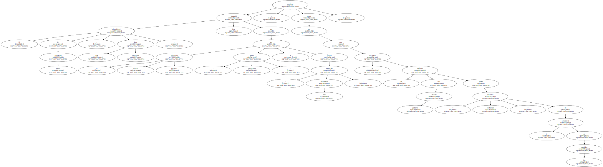
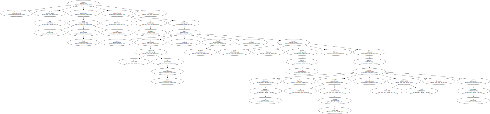
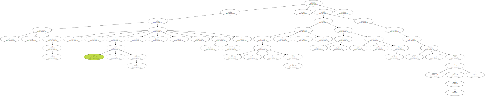
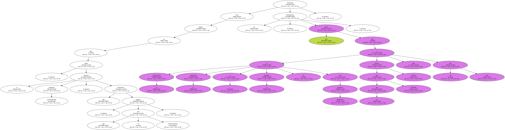
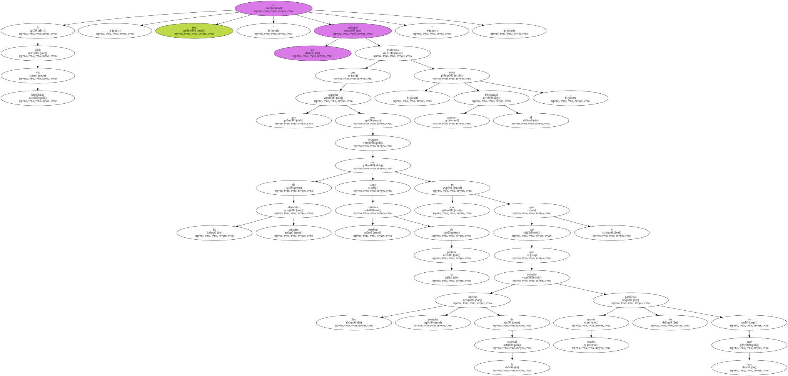
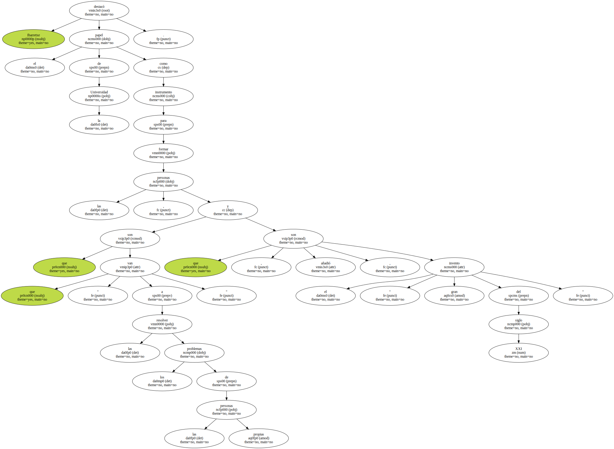
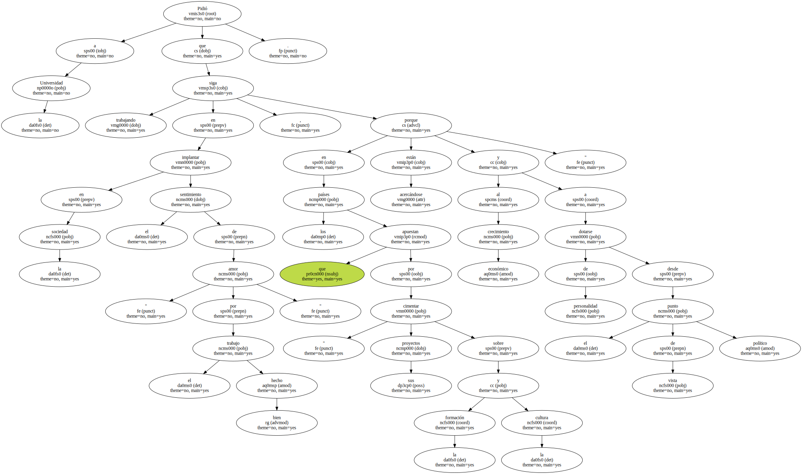
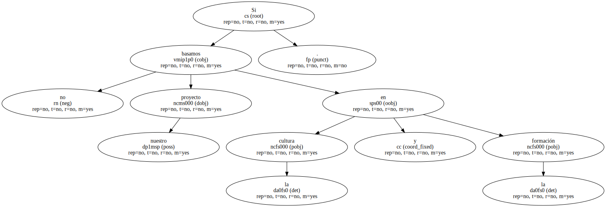

El lehendakari del Gobierno Vasco , Juan José Ibarretxe , lamentó hoy que en la actual situación política " sobra arrogancia " y faltan " mensajes más tolerantes " , y abogó por que se recupere la defensa del interés general como " columna vertebral " de la actuación de los partidos.
Ibarretxe presidió este mediodía en el Palacio de Ajuria Enea la toma de posesión del nuevo rector de la Universidad del País Vasco , Manuel Montero , quien , durante su discurso , anunció que durante su mandato intentará " potenciar la pluralidad de la sociedad y la cultura vasca " desde la Universidad.
El lehendakari también apeló al sentido de " agente de paz " que debe tener la Universidad en una situación de la sociedad vasca que calificó de " compleja ".

Recordó que " hay quien no respeta la vida , y del que no respeta la vida , desgraciadamente , nos separa un abismo tremendo " , porque a quien " no piensa como él le tratan de coaccionar e imponer sus propias ideas negando las de los demás a través de iniciativas violentas , llámense kaleborroka o de otra manera ".
Junto a esta situación , el lehendakari denunció que también hay " un discurso político lleno de arrogancia " , con la que se trata de " circunscribir el diálogo a unos ámbitos y no a otros , tratando de impulsar las soluciones que debemos dar todos los demás pero nunca las de uno mismo e incluso tratando de negar la existencia del diálogo a nivel institucional como elemento de respuesta a cualquier problema ".
Tras insistir en que " sobra el discurso excesivamente arrogante " que mantienen algunos , que no citó explícitamente , mencionó un " pensamiento que decía que la intolerancia , la arrogancia y la soberbia no es grandeza sino hinchazón y lo que está hinchado parece grande pero no está sano ".
A juicio del lehendakari , éste es " un principio que tendremos que aprender todos , primero el lehendakari , para recuperar uno de los elementos centrales como columna vertebral de la política que es que hay que defender los intereses generales de la sociedad y mucho menos los partidistas de cada cual ".
Ibarretxe destacó el papel de la Universidad como instrumento para formar las personas , que son las que " van a resolver los problemas de las propias personas " y que son , añadió , el " gran invento del siglo XXI ".
Ibarretxe destacó el papel de la Universidad como instrumento para formar las personas , que son las que " van a resolver los problemas de las propias personas " y que son , añadió , el " gran invento del siglo XXI ".
Ibarretxe destacó el papel de la Universidad como instrumento para formar las personas , que son las que " van a resolver los problemas de las propias personas " y que son , añadió , el " gran invento del siglo XXI ".
Ibarretxe destacó el papel de la Universidad como instrumento para formar las personas , que son las que " van a resolver los problemas de las propias personas " y que son , añadió , el " gran invento del siglo XXI ".
Pidió a la Universidad que siga trabajando en implantar en la sociedad el sentimiento de " amor por el trabajo bien hecho " , porque en los países que apuestan por " cimentar sus proyectos sobre la formación y la cultura están acercándose al crecimiento económico y a dotarse de personalidad desde el punto de vista político ".
Si no basamos nuestro proyecto en la cultura y la formación.